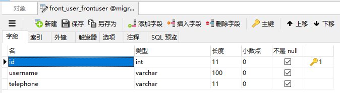

ORM模型迁移
迁移命令：
makemigrations：将模型生成迁移脚本。模型所在的
app，必须放在settings.py中的INSTALLED_APPS中。这个命令有以下几个常用选项：- app_label：后面可以跟一个或者多个
app，那么就只会针对这几个app生成迁移脚本。如果没有任何的app_label，那么会检查INSTALLED_APPS中所有的app下的模型，针对每一个app都生成响应的迁移脚本。 - --name：给这个迁移脚本指定一个名字。
- --empty：生成一个空的迁移脚本。如果你想写自己的迁移脚本，可以使用这个命令来实现一个空的文件，然后自己再在文件中写迁移脚本。
- app_label：后面可以跟一个或者多个
migrate：将新生成的迁移脚本。映射到数据库中。创建新的表或者修改表的结构。以下一些常用的选项：
- app_label：将某个
app下的迁移脚本映射到数据库中。如果没有指定，那么会将所有在INSTALLED_APPS中的app下的模型都映射到数据库中。 - app_label migrationname：将某个
app下指定名字的migration文件映射到数据库中。 - --fake：可以将指定的迁移脚本名字添加到数据库中。但是并不会把迁移脚本转换为SQL语句，修改数据库中的表。
- --fake-initial：将第一次生成的迁移文件版本号记录在数据库中。但并不会真正的执行迁移脚本。
- app_label：将某个
showmigrations：查看某个app下的迁移文件。如果后面没有app，那么将查看
INSTALLED_APPS中所有的迁移文件。sqlmigrate：查看某个迁移文件在映射到数据库中的时候，转换的
SQL语句。
migrations中的迁移版本和数据库中的迁移版本对不上怎么办？
- 找到哪里不一致，然后使用
python manage.py --fake [版本名字]，将这个版本标记为已经映射。 - 删除指定
app下migrations和数据库表django_migrations中和这个app相关的版本号，然后将模型中的字段和数据库中的字段保持一致，再使用命令python manage.py makemigrations重新生成一个初始化的迁移脚本，之后再使用命令python manage.py makemigrations --fake-initial来将这个初始化的迁移脚本标记为已经映射。以后再修改就没有问题了。
更多关于迁移脚本的。请查看官方文档：https://docs.djangoproject.com/en/2.0/topics/migrations/
根据已有的表自动生成模型：
在实际开发中，有些时候可能数据库已经存在了。如果我们用Django来开发一个网站，读取的是之前已经存在的数据库中的数据。那么该如何将模型与数据库中的表映射呢？根据旧的数据库生成对应的ORM模型，需要以下几个步骤：
Django给我们提供了一个inspectdb的命令，可以非常方便的将已经存在的表，自动的生成模型。想要使用inspectdb自动将表生成模型。首先需要在settings.py中配置好数据库相关信息。不然就找不到数据库。示例代码如下：DATABASES = { 'default': { 'ENGINE': 'django.db.backends.mysql', 'NAME': "migrations_demo", 'HOST': '127.0.0.1', 'PORT': '3306', 'USER': 'root', 'PASSWORD': 'root' } }比如有以下表：
article表：

tag表：

article_tag表：

front_user表：
那么通过
python manage.py inspectdb，就会将表转换为模型后的代码，显示在终端：from django.db import models class ArticleArticle(models.Model): title = models.CharField(max_length=100) content = models.TextField(blank=True, null=True) create_time = models.DateTimeField(blank=True, null=True) author = models.ForeignKey('FrontUserFrontuser', models.DO_NOTHING, blank=True, null=True) class Meta: managed = False db_table = 'article_article' class ArticleArticleTags(models.Model): article = models.ForeignKey(ArticleArticle, models.DO_NOTHING) tag = models.ForeignKey('ArticleTag', models.DO_NOTHING) class Meta: managed = False db_table = 'article_article_tags' unique_together = (('article', 'tag'),) class ArticleTag(models.Model): name = models.CharField(max_length=100) class Meta: managed = False db_table = 'article_tag' class FrontUserFrontuser(models.Model): username = models.CharField(max_length=100) telephone = models.CharField(max_length=11) class Meta: managed = False db_table = 'front_user_frontuser'以上代码只是显示在终端。如果想要保存到文件中。那么可以使用
>重定向输出到指定的文件。比如让他输出到models.py文件中。示例命令如下：python manage.py inspectdb > models.py以上的命令，只能在终端执行，不能在
pycharm->Tools->Run manage.py Task...中使用。如果只是想要转换一个表为模型。那么可以指定表的名字。示例命令如下：
python manage.py inspectdb article_article > models.py
修正模型：新生成的
ORM模型有些地方可能不太适合使用。比如模型的名字，表之间的关系等等。那么以下选项还需要重新配置一下：- 模型名：自动生成的模型，是根据表的名字生成的，可能不是你想要的。这时候模型的名字你可以改成任何你想要的。
- 模型所属app：根据自己的需要，将相应的模型放在对应的app中。放在同一个app中也是没有任何问题的。只是不方便管理。
- 模型外键引用：将所有使用
ForeignKey的地方，模型引用都改成字符串。这样不会产生模型顺序的问题。另外，如果引用的模型已经移动到其他的app中了，那么还要加上这个app的前缀。 - 让Django管理模型：将
Meta下的managed=False删掉，如果保留这个，那么以后这个模型有任何的修改，使用migrate都不会映射到数据库中。 当有多对多的时候，应该也要修正模型。将中间表注视了，然后使用
ManyToManyField来实现多对多。并且，使用ManyToManyField生成的中间表的名字可能和数据库中那个中间表的名字不一致，这时候肯定就不能正常连接了。那么可以通过db_table来指定中间表的名字。示例代码如下：class Article(models.Model): title = models.CharField(max_length=100, blank=True, null=True) content = models.TextField(blank=True, null=True) author = models.ForeignKey('front.User', models.SET_NULL, blank=True, null=True) # 使用ManyToManyField模型到表，生成的中间表的规则是：article_tags # 但现在已经存在的表的名字叫做：article_tag # 可以使用db_table，指定中间表的名字 tags = models.ManyToManyField("Tag",db_table='article_tag') class Meta: db_table = 'article'- 表名：切记不要修改表的名字。不然映射到数据库中，会发生找不到对应表的错误。
执行命令
python manage.py makemigrations生成初始化的迁移脚本。方便后面通过ORM来管理表。这时候还需要执行命令python manage.py migrate --fake-initial，因为如果不使用--fake-initial，那么会将迁移脚本会映射到数据库中。这时候迁移脚本会新创建表，而这个表之前是已经存在了的，所以肯定会报错。此时我们只要将这个0001-initial的状态修改为已经映射，而不真正执行映射，下次再migrate的时候，就会忽略他。将
Django的核心表映射到数据库中：Django中还有一些核心的表也是需要创建的。不然有些功能是用不了的。比如auth相关表。如果这个数据库之前就是使用Django开发的，那么这些表就已经存在了。可以不用管了。如果之前这个数据库不是使用Django开发的，那么应该使用migrate命令将Django中的核心模型映射到数据库中。